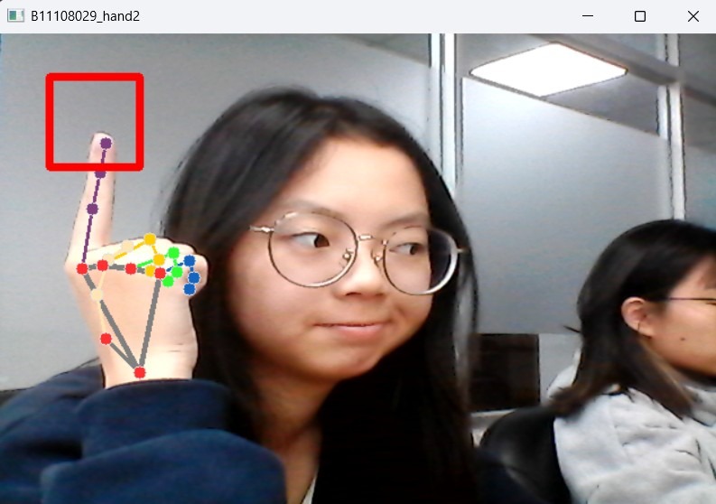
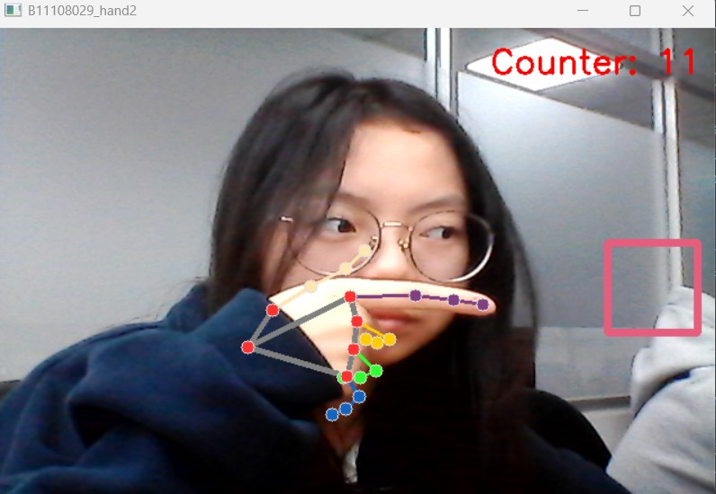

AI08X
手部追蹤 × 指尖互動小遊戲
用 MediaPipe Hands 追蹤雙手 21 個節點，並做出指尖碰方塊的互動遊戲。
功能簡介
本專案運用 MediaPipe Hands 技術，實作即時手部偵測與互動應用。首先透過手部關鍵點模型，精準擷取雙手 21 個節點位置並即時繪製骨架，建立穩定的追蹤基礎；進一步結合食指指尖的座標運算，設計出簡易「指尖碰方塊」互動遊戲，讓使用者能以手勢直接與畫面元素進行碰觸與反應互動。此技術具備延伸潛力，可應用於人機介面控制、復健輔助訓練、互動藝術裝置與教育類遊戲等多元情境。
成果展示


程式碼片段
AI081｜基本手部偵測與繪製
# AI081_hand1.py
import cv2
import mediapipe as mp
mpd = mp.solutions.drawing_utils
lm_style=mp.solutions.drawing_styles.get_default_hand_landmarks_style()
conn_style=mp.solutions.drawing_styles.get_default_hand_connections_style()
mphc = mp.solutions.hands.HAND_CONNECTIONS
hands = mp.solutions.hands.Hands(model_complexity=0, max_num_hands=2)
cap = cv2.VideoCapture(0)
while cap.isOpened():
success, image = cap.read()
imgrgb = cv2.cvtColor(image, cv2.COLOR_BGR2RGB)
results = hands.process(imgrgb)
if results.multi_hand_landmarks:
for h_landmarks in results.multi_hand_landmarks:
mpd.draw_landmarks(image, h_landmarks, mphc, lm_style, conn_style)
cv2.imshow('M10515005_hand1', image)
if cv2.waitKey(5) & 0xFF == 27:
break
cap.release()
cv2.destroyAllWindows()AI082｜指尖碰方塊互動遊戲
# AI082_hand2.py
import cv2
import mediapipe as mp
import random
mpd = mp.solutions.drawing_utils
lm_style = mp.solutions.drawing_styles.get_default_hand_landmarks_style()
conn_style = mp.solutions.drawing_styles.get_default_hand_connections_style()
mphc = mp.solutions.hands.HAND_CONNECTIONS
hands = mp.solutions.hands.Hands(model_complexity=0, max_num_hands=2)
cap = cv2.VideoCapture(0)
run = True
while cap.isOpened():
success, image = cap.read()
img = cv2.resize(image, (640, 420))
w, h = (img.shape[1], img.shape[0])
imgrgb = cv2.cvtColor(img, cv2.COLOR_BGR2RGB)
if run:
run = False
rx = random.randint(10, w - 80)
ry = random.randint(10, h - 80)
results = hands.process(imgrgb)
if results.multi_hand_landmarks:
for h_landmarks in results.multi_hand_landmarks:
mpd.draw_landmarks(img, h_landmarks, mphc, lm_style, conn_style)
x = h_landmarks.landmark[8].x * w
y = h_landmarks.landmark[8].y * h
if x > rx and x < (rx + 80) and y > ry and y < (ry + 80):
run = True
cv2.rectangle(img, (rx, ry), (rx + 80, ry + 80), (0, 0, 255), 5)
cv2.imshow('B11108029_hand2', cv2.flip(img, 1))
if cv2.waitKey(5) & 0xFF == 27:
break
cap.release()
cv2.destroyAllWindows()